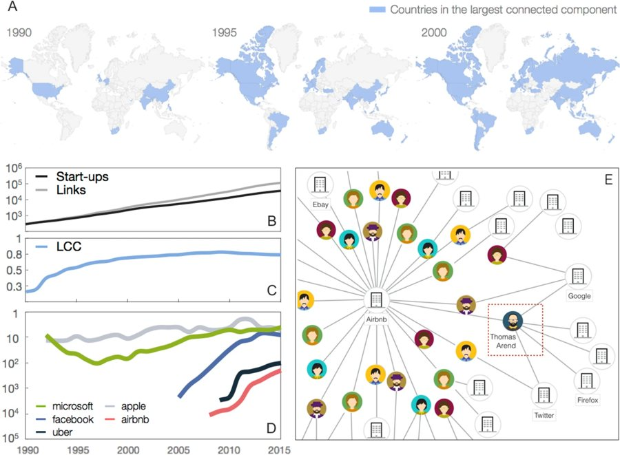
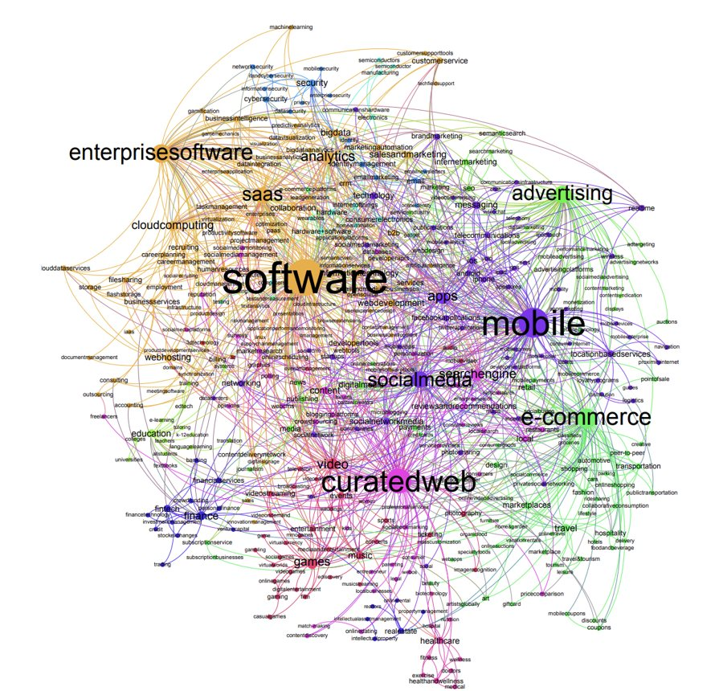
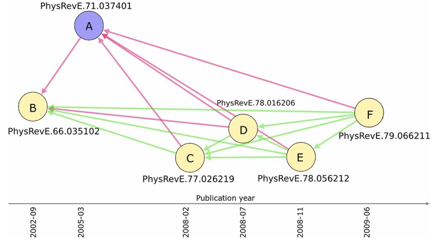
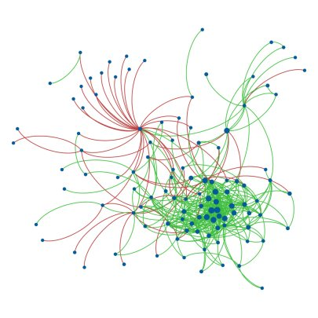

Research
Papers and talks
Networks of people, companies and citations, from my PhD at Queen Mary University of London onwards.
Papers

Scientific Reports · 2020Predicting success in the worldwide start-up networkCiotti, Bonaventura (equal contribution) and others
PhD thesis, Queen Mary University of London · 2018Positive and negative connections and homophily in complex networksCiotti
EPJ Data Science · 2016Homophily and missing links in citation networksCiotti, Bonaventura, Nicosia, Panzarasa, Latora
Physica A · 2015Degree correlations in signed social networksCiotti, Bianconi, Capocci, Colaiori, Panzarasa